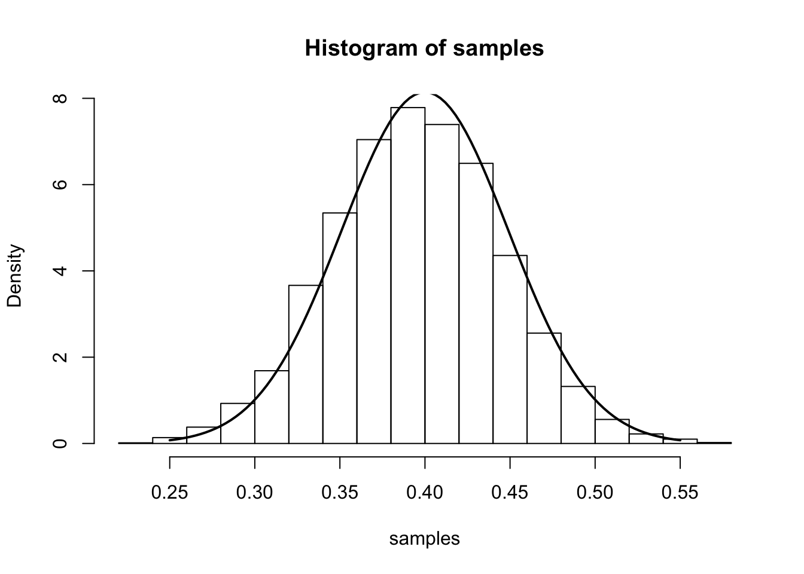
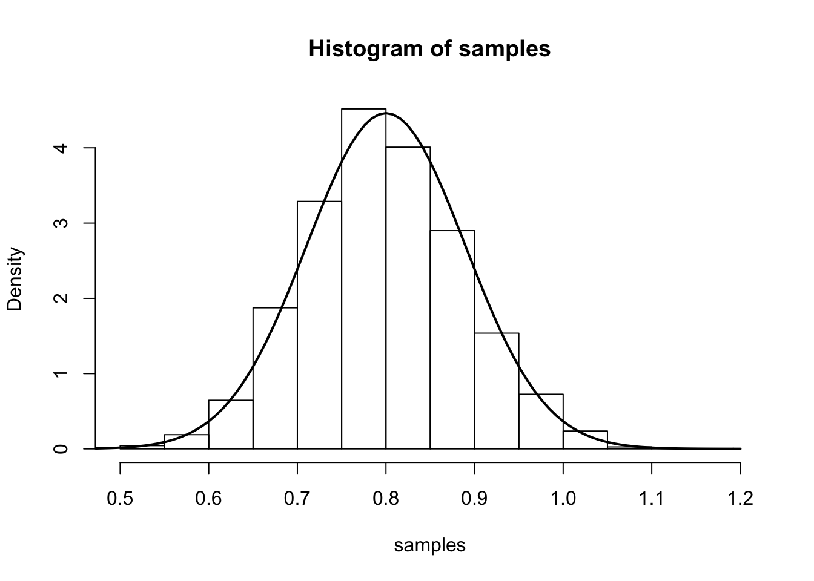

You should be familiar with the concept of Likelihood function.
Maximum likelihood estimation is a popular method for estimating parameters in a statistical model. As its name suggests, maximum likelihood estimation involves finding the value of the parameter that maximizes the likelihood function (or, equivalently, maximizes the log-likelihood function). This value is called the maximum likelihood estimate, or MLE.
It seems natural to ask about the accuracy of an MLE: how far from the “true” value of the parameter can we expect the MLE to be? This vignette answers this question in a simple but important case: maximum likelihood estimation based on independent and identically distributed (i.i.d.) data from a model.
Suppose we observe independent and identically distributed (i.i.d.) samples \(X_1,\ldots,X_n\) from a probability distribution \(p(\cdot; \theta)\) governed by a parameter \(\theta\) that is to be estimated. Then the likelihood for \(\theta\) is: \[L(\theta; X_1,\dots,X_n) := p(X_1,\ldots,X_n;\theta) = \prod_{i=1}^n p(X_i ; \theta).\] And the log-likelihood is: \[\ell(\theta; X_1,\dots,X_n):= \log L(\theta;X_1,\dots,X_n) = \sum_{i=1}^n \log p(X_i; \theta).\] Let \(\theta_0\) denote the true value of \(\theta\), and \(\hat{\theta}\) denote the maximum likelihood estimate (MLE). Because \(\ell\) is a monotonic function of \(L\) the MLE \(\hat{\theta}\) maximizes both \(L\) and \(\ell\). (In simple cases we typically find \(\hat{\theta}\) by differentiating the log-likelihood and solving \(\ell'(\theta;X_1,\dots,X_n)=0\).)
Under some technical conditions that often hold in practice (often referred to as “regularity conditions”), and for \(n\) sufficiently large, we have the following approximate result: \[{\hat{\theta}} {\dot\sim} N(\theta_0,I_{n}(\theta_0)^{-1})\] where the precision (inverse variance), \(I_n(\theta_0)\), is a quantity known as the Fisher information, which is defined as \[I_{n}(\theta) := E_{\theta}\left[-\frac{d^2}{d\theta^2}\ell(\theta; X_1,\dots,X_n)\right].\] Notes:
With i.i.d. data the Fisher information can be easily shown to have the form \[I_n(\theta) = n I(\theta)\] where \(I(\theta)\) is the Fisher information for a {} observation - that is, \(I(\theta) = I_1(\theta)\). [This follows directly from the fact that \(\ell\) is the sum of \(n\) terms, and then applying linearity of expectation: Exercise!]
The interpretation of this result needs a little care. In particular, it is important to understand what it means to say that the MLE has a “distribution”, since for any given dataset \(X_1,\dots,X_n\) the MLE \(\hat{\theta}\) is just a number.
One way to think of this is to imagine sampling several data sets \(X_1,\dots,X_n\), rather than just one data set. Each data set would give us an MLE. Supppose we collect \(J\) datasets, and the \(j\)th dataset gives an MLE \(\hat{\theta}_j\). The distribution of the MLE means the distribution of these \(\hat{\theta}_j\) values. Essentially it tells us what a histogram of the \(\hat{\theta}_j\) values would look like. This distribution is often called the “sampling distribution” of the MLE to emphasise that it is the distribution one would get when sampling many different data sets. The concrete examples given below help illustrate this key idea.
Notice that, because the mean of the sampling distribution of the MLE is the true value (\(\theta_0\)), the variance of the sampling distribution tells us how far we might expect the MLE to lie from the true value. Specifically the variance is, by definition, the expected squared distance of the MLE from the true value \(\theta_0\). Thus the standard deviation (square root of variance) gives the root mean squared error (RMSE) of the MLE.
For i.i.d. data the Fisher information \(I_n(\theta)=nI(\theta)\) and so increases linearly with \(n\) (see notes above). Consequently the variance decreases linearly with \(n\) and the RMSE decreases with \(n^0.5\). Thus, for example, to halve the RMSE we need to multiply sample size by 4.
This is a fundamental idea in statistics: for i.i.d. data (and under regularity conditions) estimation error in the MLE decreases as the square root of the sample size.
For those that dislike the vagueness of the statement “for \(n\) sufficiently large”, the result can be written more formally as a limiting result as \(n \rightarrow \infty\):
\[I_n(\theta_0)^{-0.5} (\hat{\theta} - \theta_0) \rightarrow N(0,1) \text{ as } n \rightarrow \infty\]
This kind of result, where sample size tends to infinity, is often referred to as an “asymptotic” result in statistics. So the result gives the “asymptotic sampling distribution of the MLE”.
While mathematically more precise, this way of writing the result is perhaps less intutive than the approximate statement above.
Assume we observe i.i.d. samples \(X_1,\ldots,X_n\) drawn from a Bernoulli\((p)\) distribution with true parameter \(p=p_0\). The log-likelihood is: \[\ell(p; X_1,\dots,X_n) = \sum_{i=1}^n [X_i\log{p} + (1-X_i)\log(1-p)]\] Setting the derivative equal to zero, we obtain:
\[\frac{d}{dp}\ell(p;X_1,\dots,X_n) = \sum_{i=1}^n
\left[ \frac{X_i}{p} - \frac{(1-X_i)}{1-p}\right].\]
Setting this derivative to 0 and solving for \(p\), gives that the MLE is the sample mean: \(\hat{p} = (1/n)\sum_{i=1}^n X_i\).
The second derivative with respect to \(p\) is:
\[\frac{d^2}{dp^2} \ell(p; X_1,\dots,X_n) = \sum_{i=1}^n
\left[ -\frac{X_i}{p^2} - \frac{(1-X_i)}{(1-p)^2} \right]\]
The Fisher information (for all observations) is therefore: \[I_{n}(p) = E\left[-\frac{d^2}{dp^2}\ell(p)\right] = \sum_{i=1}^n \left[ -\frac{E[X_i]}{p^2} - \frac{(1-E[X_i])}{(1-p)^2} \right] = \frac{n}{p(1-p)}.\] Notice that, as expected from the general result \(I_n(p)=nI_1(p)\), \(I_n(p)\) increases linearly with \(n\).
From the main result, we have that (for large \(n\)), \(\hat{p}\) is approximately \(N\left(p,\frac{p(1-p)}{n}\right)\). We illustrate this approximation in the simulation below.
The simulation samples \(J=7000\) sets of data \(X_1,\dots,X_n\). In each sample, we have \(n=100\) draws from a Bernoulli distribution with true parameter \(p_0=0.4\). We compute the MLE separately for each sample and plot a histogram of these 7000 MLEs. On top of this histogram, we plot the density of the theoretical asymptotic sampling distribution as a solid line.
num.iterations <- 7000
p.truth <- 0.4
num.samples.per.iter <- 100
samples <- numeric(num.iterations)
for(iter in seq_len(num.iterations)) {
samples[iter] <- mean(rbinom(num.samples.per.iter, 1, p.truth))
}
hist(samples, freq=F)
curve(dnorm(x, mean=p.truth,sd=sqrt((p.truth*(1-p.truth)/num.samples.per.iter) )), .25, .55, lwd=2, xlab = "", ylab = "", add = T)
Assume we observe i.i.d. samples \(X_1,\ldots,X_n\) drawn from a Poisson\((\lambda)\) distribution with true parameter \(\lambda=\lambda_0\). The log-likelihood is:
\[ \ell(\lambda; X_1,\ldots,X_n) = \sum_{i=1}^n -\lambda + X_i\log(\lambda) + \log(X_i!).\]
Taking the derivative with respect to \(\lambda\), setting it equal to zero, and solving for \(\lambda\) gives the mle as the sample mean, \(\hat{\lambda} = \frac{1}{n}\sum_{i=1}^{n}X_i\). The Fisher information is:
\[ I_{n}(\lambda) = E_{\lambda}\left[-\frac{d^2}{d\lambda^2}\ell(\lambda)\right] = \sum_{i=1}^n E[X_{i}/\lambda^2] = \frac{n}{\lambda}\]
The main result says that (for large \(n\)), \(\hat{\lambda}\) is approximately \(N\left(\lambda,\frac{1}{n\lambda}\right)\). We illustrate this by simulation again:
num.iterations <- 7000
lambda.truth <- 0.8
num.samples.per.iter <- 100
samples <- numeric(num.iterations)
for(iter in seq_len(num.iterations)) {
samples[iter] <- mean(rpois(num.samples.per.iter, lambda.truth))
}
hist(samples, freq=F)
curve(dnorm(x, mean=lambda.truth,sd=sqrt(lambda.truth/num.samples.per.iter) ), 0.4, 1.2, lwd=2, xlab = "", ylab = "", add = T)
This site was created with R Markdown